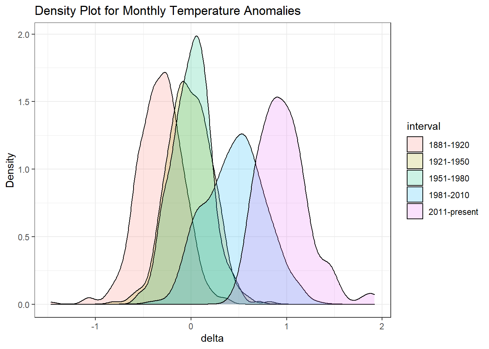

library(httr)
library(readxl)
library(vroom)
weather <-
read_csv("https://data.giss.nasa.gov/gistemp/tabledata_v3/NH.Ts+dSST.csv",
skip = 1,
na = "***")## Parsed with column specification:
## cols(
## Year = col_double(),
## Jan = col_double(),
## Feb = col_double(),
## Mar = col_double(),
## Apr = col_double(),
## May = col_double(),
## Jun = col_double(),
## Jul = col_double(),
## Aug = col_double(),
## Sep = col_double(),
## Oct = col_double(),
## Nov = col_double(),
## Dec = col_double(),
## `J-D` = col_double(),
## `D-N` = col_double(),
## DJF = col_double(),
## MAM = col_double(),
## JJA = col_double(),
## SON = col_double()
## )tidyweather <- weather %>%
select(Year,Jan,Feb,Mar,Apr,May,Jun,Jul,Aug,Sep,Oct,Nov,Dec)%>%
pivot_longer(cols = Jan:Dec,names_to ="Month",values_to ="delta")
tidyweather <- tidyweather %>%
mutate(date = ymd(paste(as.character(Year), Month, "1")),
month = month(date),
year = year(date))
comparison <- tidyweather %>%
filter(Year>= 1881) %>% #remove years prior to 1881
#create new variable 'interval', and assign values based on criteria below:
mutate(interval = case_when(
Year %in% c(1881:1920) ~ "1881-1920",
Year %in% c(1921:1950) ~ "1921-1950",
Year %in% c(1951:1980) ~ "1951-1980",
Year %in% c(1981:2010) ~ "1981-2010",
TRUE ~ "2011-present"
))
ggplot(comparison, aes(x=delta, fill=interval))+
geom_density(alpha=0.2) + #density plot with tranparency set to 20%
theme_bw() + #theme
labs (
title = "Density Plot for Monthly Temperature Anomalies",
y = "Density" #changing y-axis label to sentence case
)## Warning: Removed 5 rows containing non-finite values (stat_density).
From 2011 to present, we see that the delta is significantly positive. Therefore, it is evident that temperatures are increasing. We must act before climates increase too high!